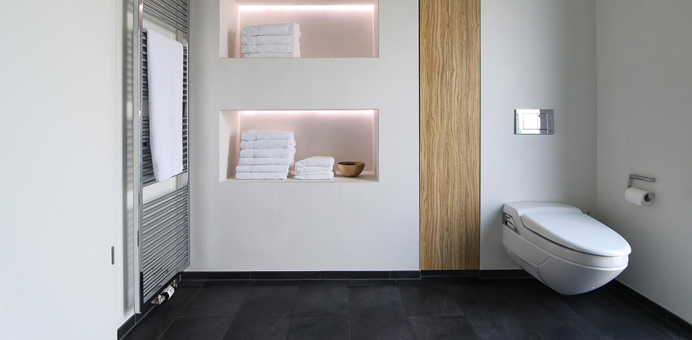
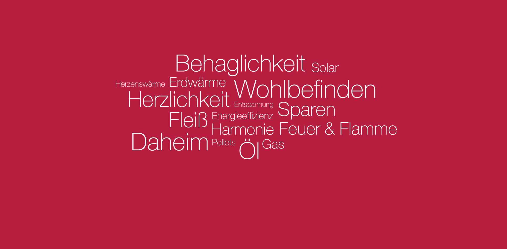
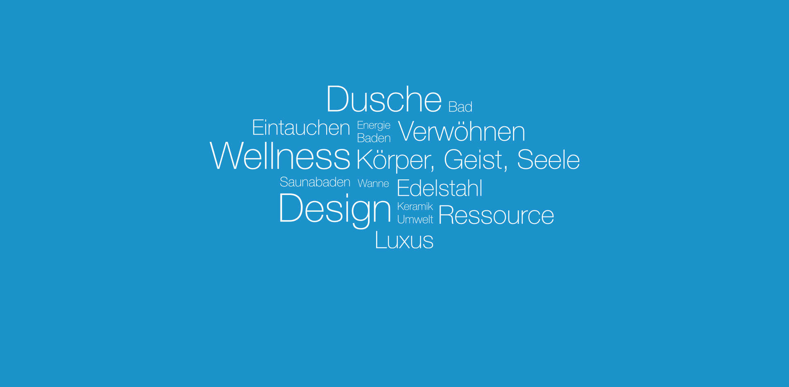
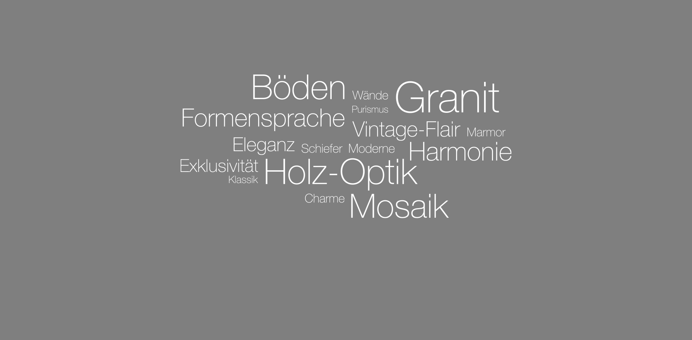
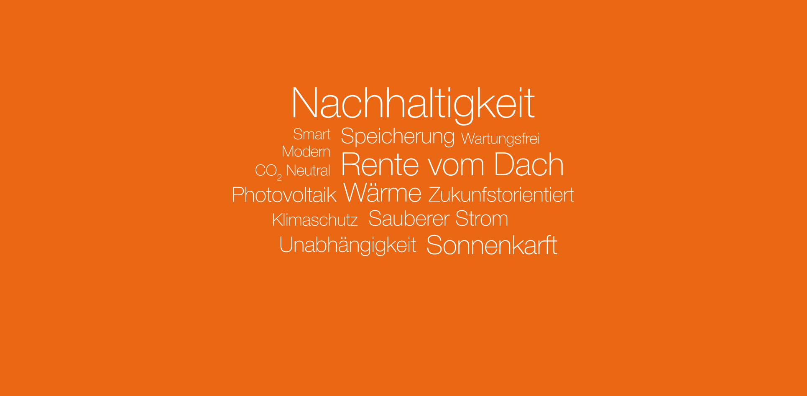
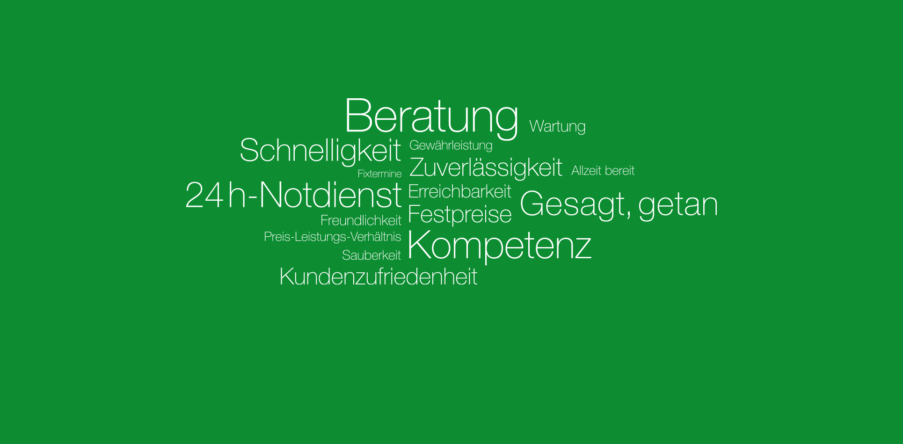

Für Fragen, Abstimmung und Baustelle bleibt die Kommunikation klar.
Bad. Heizung. Wasser. Service.
Ihr Zuhause in besten Händen.
FRANK Haustechnik begleitet Sanierungen von Bad und Heizung seit Generationen: persönlich, termingerecht und mit einem Ansprechpartner, der den Überblick behält.
Gegründet 1937
Familienbetrieb
21 Mitarbeitende
Warum FRANK
Fast 90 Jahre Erfahrung, modern gedacht.
Von Wilhelm Frank gegründet und heute in dritter Generation geführt: ein Betrieb, der Handwerk, Planung und moderne Technologien verbindet.
Vereinbarte Termine werden ernst genommen, damit Projekte planbar bleiben.
Bei Notfällen ist der Service rund um die Uhr auf Abruf.
Leistungen
Sanierung und Technik aus einer Hand.

Badmodernisierung
Schnell, stressfrei und hochwertig zum neuen Bad.

Wärme & Heizung
Effiziente Heizsysteme, Beratung und Sanierung.

Wasser & Sanitär
Saubere Lösungen für Reparatur, Installation und Modernisierung.

Fliesen
Stimmige Oberflächen für Bäder und Wohnräume.

Photovoltaik
Moderne, umweltfreundliche Energie für kommende Generationen.

Service
Wartung, Reparatur und schnelle Hilfe, wenn es darauf ankommt.
Familienbetrieb
Persönlich geplant. Professionell umgesetzt.
Die Firma FRANK Haustechnik wird in dritter Generation geführt und beschäftigt derzeit 21 Mitarbeitende. Seit über 70 Jahren bildet der Betrieb aus und steht für verlässliches Handwerk in der Region.
Anfrage startenKontakt
Der nächste Schritt ist klar.
Ob neue Heizung, Badmodernisierung, Reparatur oder Wartung: FRANK Haustechnik verbindet Sie direkt mit dem passenden Spezialisten.
Was möchten Sie anfragen?
Reparatur-Anfrage
Online-Termin buchen
Die Buttons führen direkt zur Reparaturanfrage und zum Online-Termin auf der bestehenden FRANK-Seite.
FAQ
Wichtige Fragen vor dem ersten Gespräch.
Übernimmt FRANK die komplette Badmodernisierung?
Die Website positioniert FRANK als Ansprechpartner für schnelle, stressfreie Bad- und Heizungssanierungen.
Gibt es Hilfe bei Notfällen?
Ja. Für Notfälle nennt FRANK einen 24h-Notdienst unter 0172 / 8796857.
Kann ich online einen Termin buchen?
Ja. Die bestehende Website bietet einen Online-Termin-Kalender für verfügbare Termine.